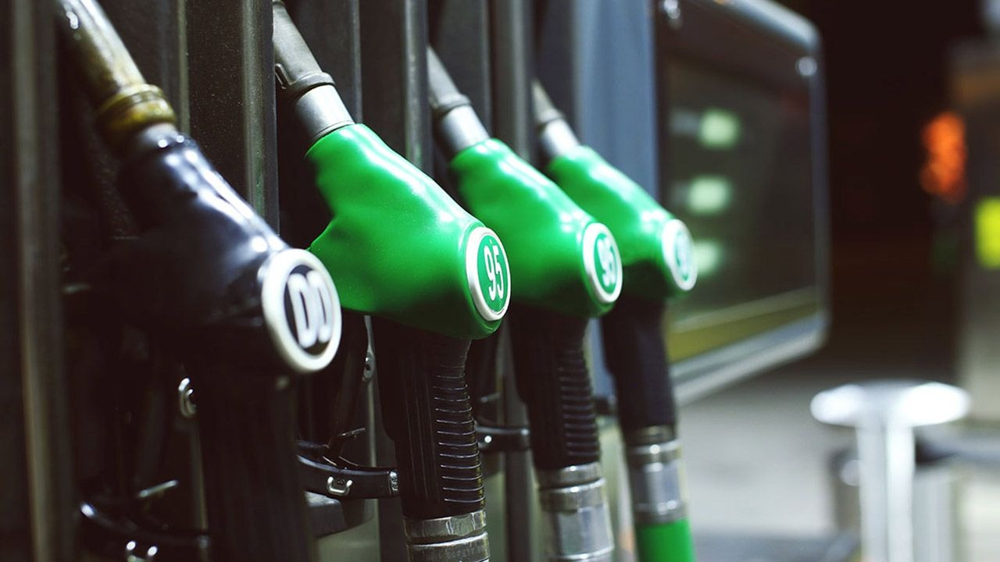
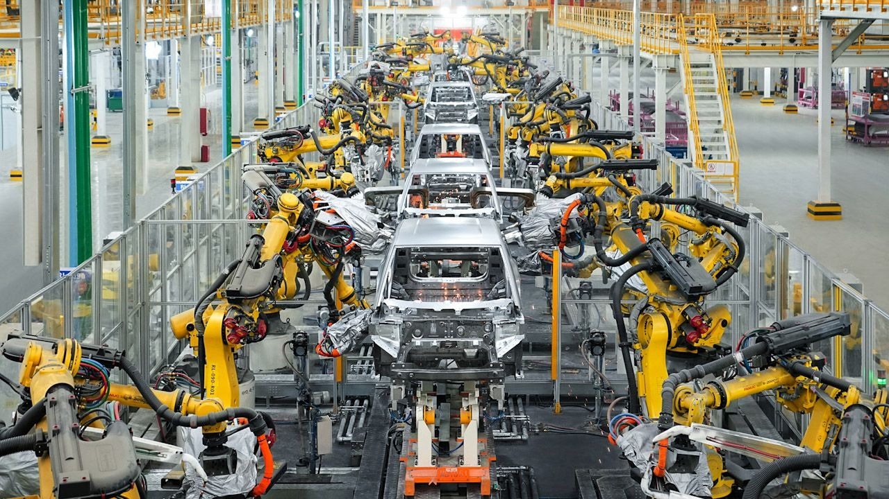
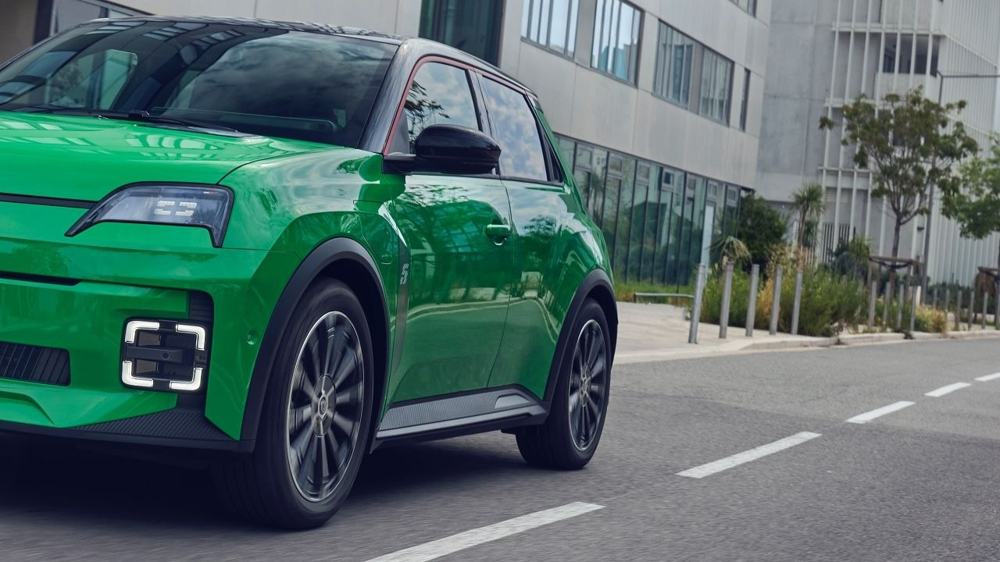
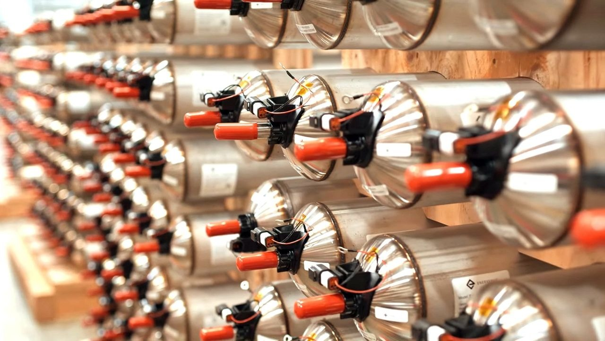
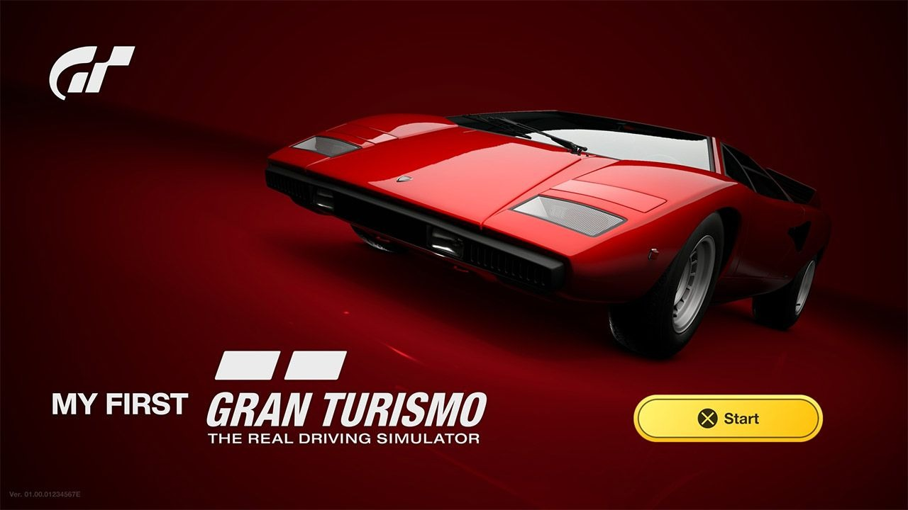
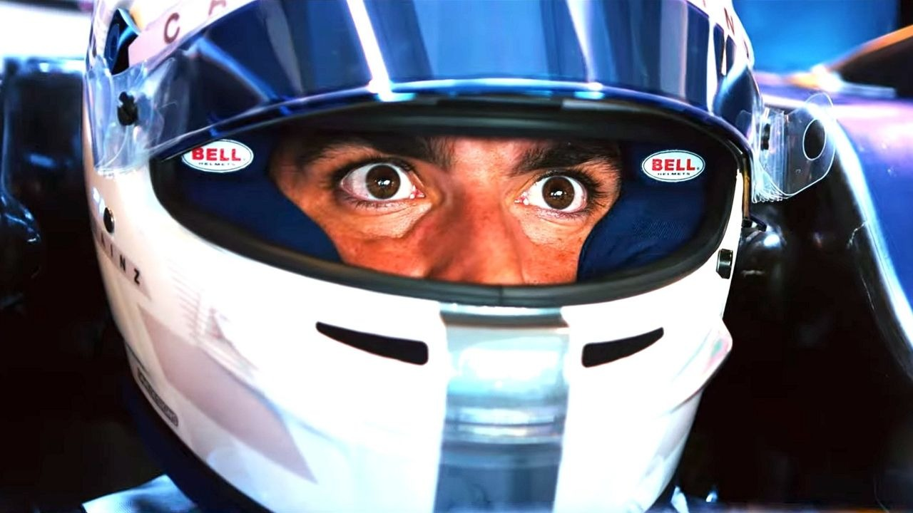
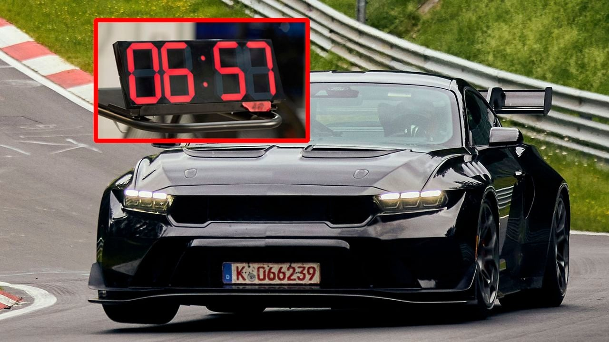
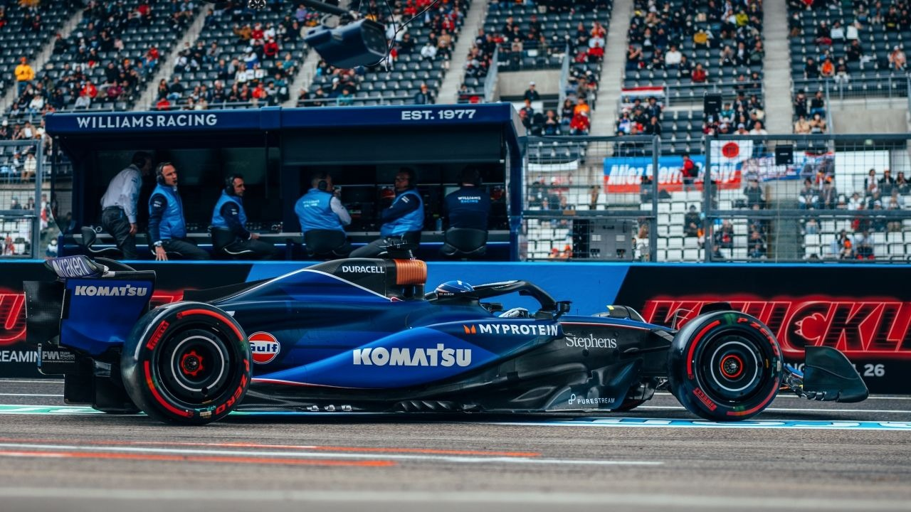
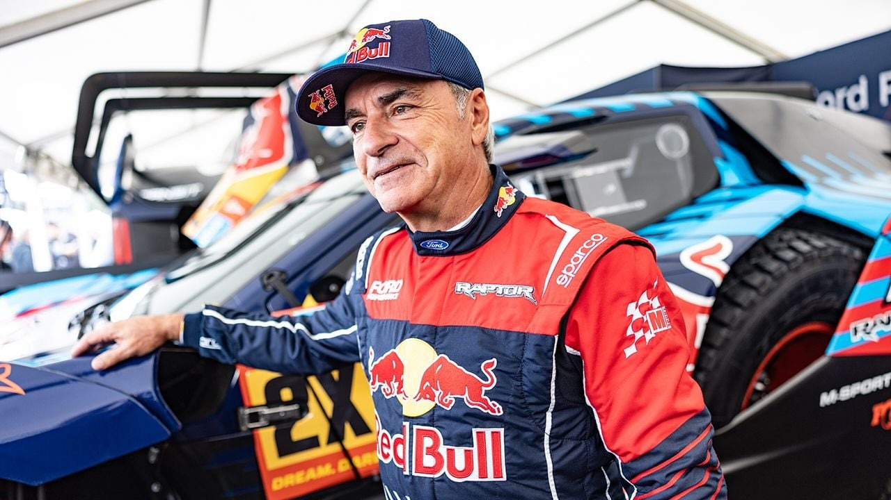

Noticias mundo motor
Aqui podrás encontrar las ultimas noticias del mundo del motor
Últimas Noticias
El Partido Popular Europeo pide eliminar la prohibición de los coches térmicos en 2035

Ni en Europa se ponen de acuerdo, ahora el Partido Popular Europeo pide eliminar la prohibición de los coches térmicos en 2035
Ni en Europa se ponen de acuerdo, ahora el Partido Popular Europeo pide eliminar la prohibición de los coches térmicos en 2035
A vueltas con la prohibición de los coches de combustión interna para el 2035 y los límites de emisiones de CO2 para el año que viene. El mayor grupo político del Parlamento Europeo vuelve a meter presión para aliviar estas medidas.
La industria automovilística europea se enfrenta a enormes retos en los próximos tiempos. En el corto plazo, gigantes como Volkswagen o Stellantis tienen que afrontar profundas reestructuraciones internas. En el medio plazo, todos los fabricantes deberán afrontar fuertes sanciones si no cumplen con las emisiones medias de CO2 impuestas por Europa para el año que viene.
Y ya en el largo plazo sigue estando el 2035 como fecha límite para que las marcas sigan vendiendo vehículos con motor de combustión. A este panorama se le suma el debilitamiento de la demanda de coches eléctricos a nivel mundial y la presión de las marcas chinas en su expansión con sus coches más asequibles.
BYD ya tiene fecha para iniciar la producción en Europa.
Como todo lo que tiene que ver con BYD, las obras de su primera fábrica en Europa avanzan más rápido de lo esperado. Las instalaciones ya tienen fecha de inauguración. Millones de euros de ahorro para la marca.
BYD ya tiene fecha para iniciar la producción de sus dos primeros coches en Europa, ya no tendrá que pagar más aranceles a Europa
Como todo lo que tiene que ver con BYD, las obras de su primera fábrica en Europa avanzan más rápido de lo esperado. Las instalaciones ya tienen fecha de inauguración. Millones de euros de ahorro para la marca.
Como todo lo que tiene que ver con BYD, las obras de su primera fábrica en Europa avanzan más rápido de lo esperado. Las instalaciones ya tienen fecha de inauguración. Millones de euros de ahorro para la marca.
Los últimos resultados han demostrado el enorme crecimiento de la marca BYD, principalmente a escala local, en China, pero también a nivel internacional. Después de China, Europa es el mercado en el que venden más coches. A pesar de estos buenos resultados las políticas europeas no benefician a los intereses de la compañía de Shenzhen. Los nuevos aranceles fijados por Bruselas obligan a BYD, y a muchas otras empresas chinas, a pagar importantes cotas portuarias por cada vehículo que cruza los límites de la Unión Europea. En apenas un año Europa se quedará sin la aportación del mayor fabricante chino.
Apenas un par de meses de vida, pero este coche eléctrico ya se vende más que el Tesla Model Y

El Tesla Model Y fue en 2023 el coche más vendido en todo el mundo. El éxito del SUV eléctrico puede verse atacado por la llegada de un rival mucho más pequeño y bastante más divertido.
Apenas tiene un par de meses de vida, pero este coqueto coche eléctrico francés ya se vende más que el Tesla Model Y
El Tesla Model Y fue en 2023 el coche más vendido en todo el mundo. El éxito del SUV eléctrico puede verse atacado por la llegada de un rival mucho más pequeño y bastante más divertido.
Cuando tomamos al Tesla Model Y como máxima referencia eléctrica internacional no es por mero gusto, sino porque las cifras avalan dicha comparativa. En 2023 el Model Y se convirtió en el coche más popular de todo el mundo. El primer coche eléctrico en recibir semejante honor y el primer en conseguir desbancar a Toyota en el liderato. Apenas un año más tarde el SUV americano se tiene que enfrentar a nuevos y poderosos rivales como el coqueto Renault 5 eléctrico.
En los 12 meses de 2023 el Model Y matriculó, en todo el mundo 1,23 millones de unidades, un 64% más que en mismo periodo del curso anterior. Hoy sigue siendo el más vendido de Tesla con una destacada cuota de mercado, aunque cada vez menor dada la cada vez más numerosa presencia de rivales importantes. Si bien el Renault 5 E-TECH y el Model Y nada tienen en común, más allá de su eficiente mecánica, las matriculaciones del modelo galo están siendo más altas de lo esperadas. Al menos en Francia, donde ya ha desbancando al americano.
"El hidrógeno es una pérdida de tiempo”, dicen. Esta batería lo utiliza y sus prestaciones son espectaculares
Las baterías de metal-hidrógeno de EnerVenue desafían las críticas al hidrógeno con prestaciones revolucionarias
"El hidrógeno es una pérdida de tiempo”, dicen. Esta batería lo utiliza y sus prestaciones son espectaculares
Las baterías de metal-hidrógeno de EnerVenue desafían las críticas al hidrógeno con prestaciones revolucionarias: más de 30.000 ciclos, alta seguridad y sostenibilidad. Su potencial ya está siendo probado por RWE en un ambicioso proyecto de energía renovable.
En un panorama energético en el que el hidrógeno se enfrenta a numerosas críticas debido a las dificultades para integrarlo de manera eficiente en aplicaciones comerciales, la tecnología metal-hidrógeno de EnerVenue parece desafiar este escepticismo.
Esta compañía, pionera en baterías de metal-hidrógeno, ha demostrado que este elemento puede tener un papel crucial en el almacenamiento de energía limpia y sostenible.
¿Quieres jugar gratis a Gran Turismo? Desde hoy puedes hacerlo en PS4 y PS5
Los creadores de Gran Turismo han creado un juego Free to Play llamado 'My First Gran Turismo' Desde ya puedes jugarlo gratis en PS4 y PS5.
¿Quieres jugar gratis a Gran Turismo? Desde hoy puedes hacerlo en PS4 y PS5
Los creadores de Gran Turismo han creado un juego Free to Play llamado 'My First Gran Turismo' que rememora y homenajea al primero de los Gran Turismo de la historia. Desde ya puedes jugarlo gratis en PS4 y PS5.
Gran Turismo está en el corazón de todos los jugones de videoconsolas y amantes de los coches y las carreras en general. A cada nueva generación, nos engancha como pocos videojuegos por su realismo, la adrenalina que desprende, sus gráficos y, sobre todo, por su enorme colección de coches disponibles.
Con Gran Turismo 7 llevamos ya unos años disfrutando, y todavía quedan unos cuantos más para tener en las consolas la octava entrega. Sin embargo, desde hoy viernes 6 de diciembre tenemos disponible una pequeña píldora a modo de regalo anticipado de Navidad.
Williams publica las primeras (y espectaculares) imágenes oficiales de Carlos Sainz
Carlos Sainz debutó a los mandos del Williams FW46 el pasado mes de diciembre, pero su contrato con Ferrari impedía a su nuevo equipo distribuir dichas imágenes. Ahora ya es posible y hemos tenido un primer adelanto.
Williams publica las primeras (y espectaculares) imágenes oficiales de Carlos Sainz
Carlos Sainz debutó a los mandos del Williams FW46 el pasado mes de diciembre, pero su contrato con Ferrari impedía a su nuevo equipo distribuir dichas imágenes. Ahora ya es posible y hemos tenido un primer adelanto.
Se han hecho esperar, pero ya tenemos las primeras imágenes oficiales de Carlos Sainz como piloto de Williams Racing. El piloto español quedó desvinculado a la Scuderia Ferrari de manera oficial este mismo 1 de enero, entrando automáticamente en vigor el contrato con su nuevo equipo.
Un contrato que le vincula uno de los equipos históricos de la Fórmula 1, Williams, por un mínimo de dos temporadas, y que debe llevarle de vuelta a las posiciones intermedias de la parrilla tras haber luchado por todo con Ferrari.
Aqui te mostramos las imagenes!!
2025, the fight starts now 👊 pic.twitter.com/AE34TdB7uj
— Williams Racing (@WilliamsRacing) January 1, 2025
El Ford Mustang hace historia, es el primer americano que baja de los 7 minutos en Nürburgring
Lo ha estado persiguiendo durante muchos meses, pero el "Infierno verde" es demasiado para algunos de los modelos más deseados del mercado.
El Ford Mustang hace historia, es el primer americano que baja de los 7 minutos en Nürburgring
Lo ha estado persiguiendo durante muchos meses, pero el "Infierno verde" es demasiado para algunos de los modelos más deseados del mercado. El Ford Mustang GTD ha logrado batir un nuevo récord en Nürburgring, pero no ha conseguido ser uno de los más rápidos entre los europeos de su talla. El 911 GT3 aún le queda lejos.
Tanto la marca del óvalo azul como los técnicos de Ford Performance pueden estar tranquilos con el récord que han logrado en los 20,8 kilómetros de esa sección norte del circuito de Nürburgring a la que se han estado enfrentando día tras día desde hace meses. Sin embargo, aunque el tiempo logrado es uno de los más rápidos, no ha sido posible a uno que es toda una insignia en estas misiones y en estos desafíos.
Si bien el verdadero objetivo de la marca americana ha sido el Porsche 911 GT3 y sus 6 minutos y 55 segundos, el Ford Mustang GTD puede presumir de ser el primer automóvil de producción americano que atraviesa el «Infierno Verde» en menos de siete minutos, cosa de la que no todos los rivales estadounidenses pueden hacer. La verdad es que este circuito, con sus 73 curvas, le convierten en un escenario complicado, por lo que parar el crono en nada menos que seis minutos y 57,685 segundos es un sueño para muchos.
Leclerc ya no está obligado a quedar bien con Carlos Sainz: “Hay cosas para las que no tienes explicación”

La etapa de Carlos Sainz en Ferrari ha llegado a su fin y Charles Leclerc ya no tendrá que jugar en equipo con el español.
TLeclerc ya no está obligado a quedar bien con Carlos Sainz: “Hay cosas para las que no tienes explicación”
La etapa de Carlos Sainz en Ferrari ha llegado a su fin y Charles Leclerc ya no tendrá que jugar en equipo con el español. A pesar de eso, el monegasco ha querido opinar sobre un compañero con el que ha competido intensamente.
A lo largo de los últimos cuatro años, Carlos Sainz y Charles Leclerc han competido casi siempre en pequeños márgenes, a veces a favor del español y otras a favor del monegasco.
Como es lógico, esta intensa rivalidad ha provocado roces y discusiones, si bien casi nunca han llegado a contactar en la pista. El último desencuentro se produjo en Las Vegas, cuando Charles Leclerc mostró su descontento con Sainz a través de la radio.
El terrorífico relato de Vowles sobre la situación de Williams, ¿ha cometido Carlos Sainz el error de su vida?
Los últimos años de gestión de la familia Williams sumieron al equipo en un deterioro extremo.
El terrorífico relato de Vowles sobre la situación de Williams, ¿ha cometido Carlos Sainz el error de su vida?
Los últimos años de gestión de la familia Williams sumieron al equipo en un deterioro extremo. Quienes llegaron después solventaron algunas cosas, pero fue James Vowles quien se puso realmente manos a la obra. Y Carlos Sainz seguirá sufriendo las consecuencias.
En el universo de la Fórmula 1, Williams tiene un significado especial y bastante prominente. Sin embargo, para los seguidores más jóvenes, Williams podría parecer poco más que un nombre olvidado en el paddock.
No siempre fue así. Con nueve títulos de constructores, Williams es el segundo equipo más laureado de la historia, sólo detrás de Ferrari. Sus 114 victorias en Grandes Premios consolidaron una dinastía que se extendió hasta principios de los años 2000. La última de ellas fue en 2012, cuando Pastor Maldonado sorprendió al mundo ganando en el GP de España.
¿Bebes y conduces? Estos son los efectos detallados que te provoca el alcohol como conductor
Conducir después de haber ingerido alcohol nunca es una buena idea.
¿Bebes y conduces? Estos son los efectos detallados que te provoca el alcohol como conductor
Conducir después de haber ingerido alcohol nunca es una buena idea. Un conductor bajo los efectos del alcohol se arriesga, más allá de las multas, a ponerse al volante con una serie de aptitudes completamente alteradas y que elevarían el riesgo de accidente.
Cuántas veces hemos escuchado el mantra de «si bebes, no conduzcas», y es algo que deberíamos respetar al dedillo. Sin embargo, sigue habiendo muchos conductores que a diario son objeto de pruebas de alcoholemia y que dan positivo, muchos otros que acaban implicados en algún incidente de tráfico, y muchos otros que no son cazados pero que siguen siendo un enorme peligro en la carretera.
De sobra es, o así debería serlo, conocido como el alcohol modifica nuestro organismo de tal forma que se vuelve completamente incompatible con la conducción segura. Ponerse al volante tras haber bebido alcohol eleva el riesgo de accidente de forma considerable, hasta el punto de estar implicado en España en uno de cada tres siniestros viales.
Así afecta el alcohol al comportamiento del conductor
- 0,2-0,5 g/l: inicio del riesgo
- Aumento de los tiempos de reacción.
- Infravaloración de la percepción de la velocidad.
- Problemas de coordinación.
- Comportamiento de tolerancia al riesgo.
- Deterioro del movimiento ocular.
- Primeros fallos en la toma de decisiones.
- 0,5-0,8 g/l: alarma, riesgo alto
- Aumento significativo de los tiempos de reacción.
- Peor percepción de las distancias.
- Reacción retardada general en los movimientos.
- Inicio de la impulsividad y la agresividad.
- Dificultades para ver las luces rojas.
- Alteraciones en la toma de decisiones.
- 0,8-1,5 g/l: conducción peligrosa, embriaguez importante
- Alteración grave de los tiempos de reacción.
- Deterioro de la atención y los reflejos.
- Problemas de coordinación.
- Comportamiento impredecible y más arriesgado.
- Deslumbramientos, visión túnel.
- Adopción de mayores riesgos.
- 1,5-2,5 g/l: conducción muy peligrosa, embriaguez total
- Alteración grave de los tiempos de reacción.
- Graves problemas de atención.
- Pérdida de control de los movimientos.
- Agitación psicomotriz.
- Deslumbramientos, visión doble.
- Toma de decisiones gravemente afectada.
- +3 g/l: incapacidad para la conducción, inconsciencia
- Sin reacción al volante.
- Pérdida total de reflejos.
- Parálisis en los movimientos.
- Posible coma (+4 g/l).
- Visión anulada.
- Toma de decisiones anulada.
¿Sueles llevar el depósito de combustible del coche medio vacío? Si dejas de hacerlo, evitarás esta avería

Algo aparentemente tan inofensivo como llevar el depósito de combustible bastante vacío de forma habitual puede provocar averías costosas en el motor de tu vehículo.
¿Sueles llevar el depósito de combustible del coche medio vacío? Si dejas de hacerlo, evitarás esta avería
Algo aparentemente tan inofensivo como llevar el depósito de combustible bastante vacío de forma habitual puede provocar averías costosas en el motor de tu vehículo. Te contamos las causas y lo fácil que resulta evitar que suceda.
Los vehículos son máquinas muy sofisticadas y complejas que han alcanzado un alto nivel de fiabilidad en los tiempos actuales. Sin embargo, algunas de nuestras costumbres como conductores pueden generar problemas a largo plazo.
Ya te hemos hablado de algunas de esas prácticas perjudiciales, como por ejemplo exigirle al motor más de la cuenta nada más arrancarlo, descuidar la presión de los neumáticos o apurar la reserva del depósito de carburante.
Pues bien, exprimir hasta la última gota de combustible no es la única manía relacionada con el depósito que muchos conductores tienen. También los hay que acostumbran a mantener el mismo siempre medio vacío, repostando pequeñas cantidades de forma frecuente.
Previo Dakar 2025: el 'Raptor' Sainz, en busca del quinto Touareg
A pocos días del inicio del rally más duro del mundo, os traemos una detallada previa para estar al tanto de toda la información de la edición 2025 del Dakar, con Carlos Sainz estrenándose con Ford.
Previo Dakar 2025: el 'Raptor' Sainz, en busca del quinto Touareg
A pocos días del inicio del rally más duro del mundo, os traemos una detallada previa para estar al tanto de toda la información de la edición 2025 del Dakar, con Carlos Sainz estrenándose con Ford.
A pocas horas de que termine el 2024, las miradas del mundo automovilístico ya están puestas en el primer evento del 2025: el Rally Dakar, que, como manda la tradición, marca el inicio del calendario deportivo.
Mientras los participantes ya embarcan hacia Arabia Saudí, y en España ultimamos los detalles para tomarnos las doce uvas y dar la bienvenida al nuevo año, os ofrecemos un pequeño aperitivo en forma de previo para abrir boca.
👇 The official route of Dakar 2025!
— DAKAR RALLY (@dakar) November 28, 2024
🚩 Bisha - Shubaytah 🏁
🏍 7,706 km (5,146 km of SS)
🚗 7,759 km (5,115 km of SS)
🔜 #Dakar2025 #DakarInSaudi pic.twitter.com/ImCJH4OClv